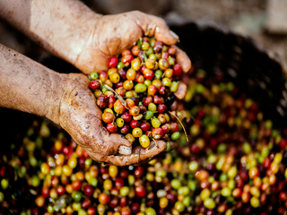

History

History Of Coffee Beans
- coffee plant was discovered in Ethiopia by a goat herder named Kaldi around 850 AD
- by 1500, it was exported to the rest of the world through the port of Mokha, Yemen.
- First cultivation in India (Chikmagalur)-1600
- First cultivation in Europe – 1616
- First cultivation in Europe – 1616
- First cultivation in Caribbean (Cuba, Hispaniola, Jamaica, Puerto Rico) – 1715–1730
- First cultivation in South America – 1730
- First cultivation in Dutch East Indies – 1720
- Roasted beans first sold on retail market (Pittsburgh) – 1865
copyright 2025 ©